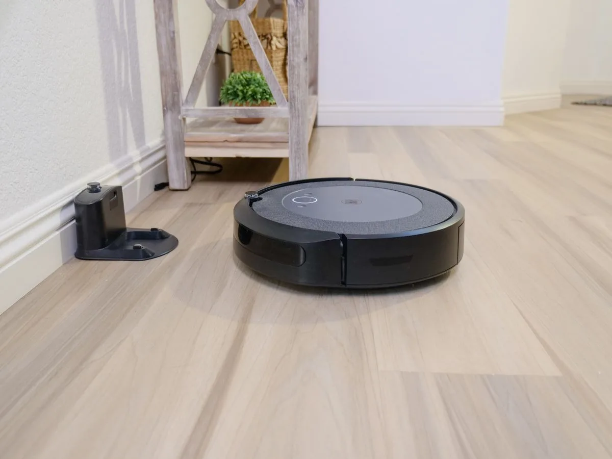
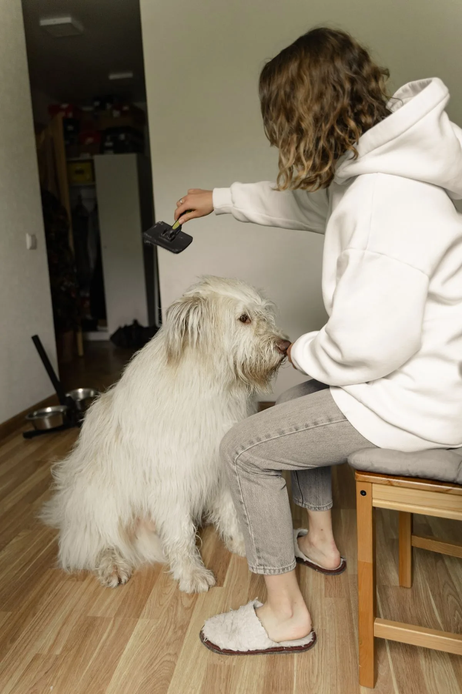
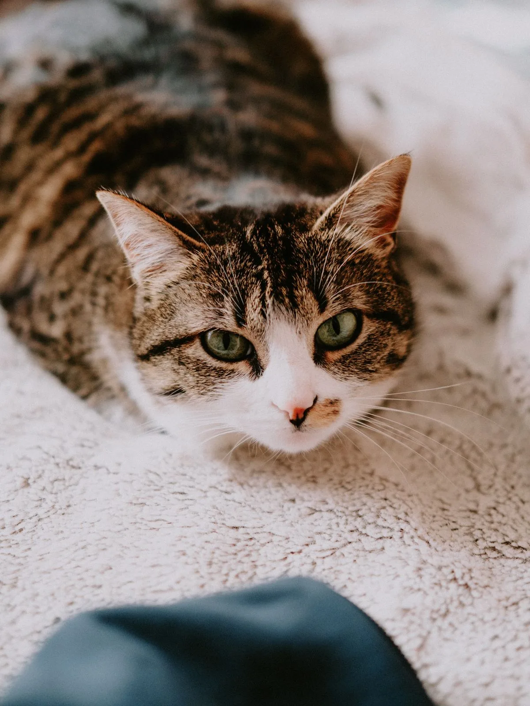
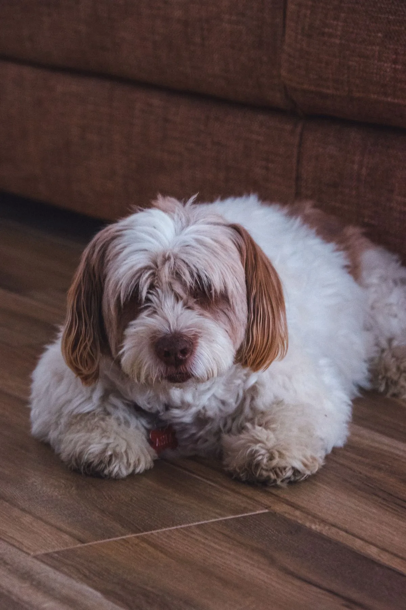

Best Robot Vacuum for Pet Hair: What Actually Matters Before You Buy
What makes a robot vacuum good for pet hair?
A robot vacuum that is good for pet hair needs three things: a brush that does not wrap itself in hair, enough suction to pull hair out of carpet, and a bin you do not have to empty every day. Rubber brushes and auto-detangling designs beat bristle brushes for hair. A self-emptying dock matters most in shedding season, when a small onboard bin fills in one run. Check the brush, the suction figure and the dock before you buy.
Our pick: iRobot Roomba j9+ — our pick in our research for a pet home: iRobot calls it its best robot vacuum for furry pet owners, with dual rubber brushes, pet-waste avoidance and a Clean Base that holds up to 60 days of dirt and debris.
Check price on AmazonAffiliate link to be added after approval. No price shown here — check it on Amazon.
At a glance
| Product | Best for | Check price |
|---|---|---|
| iRobot Roomba j9+ | Best overall in our research for a pet home | Link pending |
| Roborock S8 Pro Ultra | Full self-emptying dock and carpet boost | Link pending |
| Ecovacs Deebot X2 Omni | Square shape for edges and corners | Link pending |
| Eufy X10 Pro Omni | Auto-detangling brush for long hair | Link pending |

We may earn a commission if you buy through links on this page. As an Amazon Associate I earn from qualifying purchases.
What you need
Four vacuums our research checked against the makers' own pages on 11 November 2026, all with rubber or auto-detangling brushes and a self-emptying dock. No prices here on purpose — check the price on Amazon, and check the brush, the suction figure and the dock against your own home before you buy.
iRobot Roomba j9+
Our pick in our research for a pet home. iRobot calls it its best robot vacuum for furry pet owners: dual multi-surface rubber brushes, 100% stronger power-lifting suction than the Roomba i Series, and PrecisionVision navigation that steers clear of pet bowls, pet toys and accidental pet messes — with a replacement promise if it fails on solid pet waste. The Clean Base Automatic Dirt Disposal holds up to 60 days of dirt and debris in a sealed bag, and a high-efficiency filter is included in the box.
Watch out: It is a vacuum only — it does not mop. The iRobot page we checked showed it out of stock, and the US iRobot site now leads with the Roomba Combo j9+ vacuum-and-mop version, so check which j9+ version is actually for sale before you buy.
Check price on AmazonAffiliate link to be added after approval. No price shown here — check it on Amazon.
Roborock S8 Pro Ultra
6,000 Pa HyperForce suction and a DuoRoller Riser brush — dual rubber brushes that Roborock says give fewer hair tangles. The RockDock Ultra self-empties the dustbin after each clean, with up to 7 weeks before the dust bag needs changing, and Roborock's Carpet Boost+ system is made for carpet cleaning, from pet hair to crumbs.
Watch out: Roborock states the 6,000 Pa suction figure from its own testing in Max+ mode with a full battery, so everyday modes will be lower. The dock also washes and dries mops, so it is a full maintenance station, not just a charging base — check the space it needs and what the replacement dust bags cost.
Check price on AmazonAffiliate link to be added after approval. No price shown here — check it on Amazon.
Ecovacs Deebot X2 Omni
8,000 Pa suction and a 200mm rubber roller brush, in a square body that Ecovacs says gets closer to edges and corners than a round robot. The all-in-one OMNI station auto-empties the dustbin, washes the mops with hot water and dries them with hot air, and the robot lifts its mops by 15mm on carpet so it can raise suction instead of dragging a wet pad across the rug.
Watch out: The Ecovacs page we checked showed it out of stock, so check availability — a newer model may have replaced it where you shop. Ecovacs does not list a HEPA filtration rating on the page we checked, so do not assume one.
Check price on AmazonAffiliate link to be added after approval. No price shown here — check it on Amazon.
Eufy X10 Pro Omni
8,000 Pa suction that eufy says removes hidden debris in carpets, including pet hair, in one pass. The auto-detangling roller brush rotates in reverse while a Pro-Detangle Comb flips down to loosen hair wrapped around it, so you do not have to cut it off by hand. The All-in-One Station empties the dustbin into a 2.5L dust bag that eufy says needs replacing about every 2 months, and eufy's own advice for pet owners is to increase the self-empty frequency to every 15 minutes and use Turbo or Max suction.
Watch out: The mops lift by 12mm when carpet is detected, so check thick rugs before you buy. Eufy does not list a HEPA filtration rating on the page we checked, so do not assume one.
Check price on AmazonAffiliate link to be added after approval. No price shown here — check it on Amazon.
How to pick
- Work out where the hair lives. Carpet, hard floors, or both — and how much your pet sheds. A heavy shedder on carpet needs the brush and the suction checked first; a light shedder on hard floors can get away with a simpler machine.
- Check the brush before anything else. Rubber brushes and auto-detangling designs resist hair wrapping; bristle brushes catch long hair and need cutting off by hand. Every model in this guide uses rubber brushes or an auto-detangling comb.
- Check the bin and the dock. A small onboard bin fills in one run in shedding season. A self-emptying dock lets the robot empty itself and carry on — the Roomba j9+ holds up to 60 days in its Clean Base, the Roborock S8 Pro Ultra up to 7 weeks in its RockDock Ultra, and the Eufy X10 Pro Omni about 2 months in a 2.5L dust bag, all according to the makers.
- Check the filter and the running costs. The Roomba j9+ ships with a high-efficiency filter and sealed disposal bags. The Ecovacs and Eufy pages we checked did not list a filtration rating, so do not assume one — and check what replacement bags and filters cost before you buy, because that is the real running cost in a pet home.


Photos still needed
Photos are now in place for the hero, the grooming step, the carpet step and the pet-at-home note (see Photo credits). Still missing — needs real at-home photos of the actual models:
- A robot vacuum running on carpet with visible pet hair, before and after
- A brush roller after a week in a shedding home, showing how much hair wrapped round it
- A self-emptying dock being emptied, bag or bin visible
- Real test photos of the vacuums in this guide, taken at home
Comparison
| Product | Best for | What to check before you buy | Watch out for |
|---|---|---|---|
| iRobot Roomba j9+ | Best overall in our research for a pet home | Dual rubber brushes, pet-waste avoidance, Clean Base up to 60 days, high-efficiency filter | Vacuum only, no mop; check which j9+ version is actually for sale |
| Roborock S8 Pro Ultra | Full self-emptying dock and carpet boost | 6,000 Pa suction, DuoRoller Riser brush, RockDock Ultra up to 7 weeks | 6,000 Pa figure is measured in Max+ mode; dock is a full maintenance station |
| Ecovacs Deebot X2 Omni | Square shape for edges and corners | 8,000 Pa suction, 200mm rubber roller brush, OMNI station auto-empty | Showed out of stock on the page we checked; no HEPA rating listed |
| Eufy X10 Pro Omni | Auto-detangling brush for long hair | 8,000 Pa suction, Pro-Detangle Comb, 2.5L dust bag about every 2 months | Mops lift only 12mm on carpet; no HEPA rating listed |
How we picked
These products were verified live on the manufacturers' own pages on 11 November 2026 — iRobot, Roborock, Ecovacs and Eufy — for suction, brush design, self-emptying and filtration. They were NOT part of the original 25-product score set (that set covered the eufy C30 and Roborock Q10 S5+ in Guide B). The Shark AI Ultra AV2501AE was considered but left out: no product page for it could be found on sharkclean.com, so it could not be verified the same way.
| Products scored in our research | Products in this guide | Hands-on tests run |
|---|---|---|
| 25 (original four-area set) | 4 | 0 — none yet |
What we have not done yet: no product in this guide has been tested hands-on by us. When we test one at home, this box will say so, with the date.
Troubleshooting
The brush keeps wrapping in hair
Check the brush type first — bristle brushes wrap hair, rubber and auto-detangling brushes resist it. If the model has an auto-detangling brush, use the maker's pet settings: eufy advises pet owners to increase the self-empty frequency to every 15 minutes and set suction to Turbo or Max. Long human hair wraps the same way pet hair does, so check the roller after the first week, not the first month.
The bin fills before the run finishes
That is normal in shedding season with a small onboard bin. Run the robot daily so each run picks up less, and let a self-emptying dock do the emptying between runs. If the dock bag fills fast, check the maker's interval — the Roomba j9+ Clean Base holds up to 60 days of dirt and debris according to iRobot, but a heavy shedder will fill any bag faster than the headline figure.
Hair is still on the carpet after a run
Check the suction mode. Stated suction figures are measured on the highest mode — Roborock states its 6,000 Pa figure from testing in Max+ mode with a full battery — so a run on a quiet or eco mode will pick up less. Check carpet boost is on, run a second pass over the worst rooms, and remember a robot is the daily fur manager, not a replacement for a weekly deep clean with a normal vacuum.

Frequently asked questions
Do I need a self-emptying dock if I have pets?
In a shedding home, yes — it is the feature that changes daily life most. A small onboard bin can fill in a single run when a pet is shedding, so the robot stops and waits for you. A self-emptying dock lets it empty itself and carry on, and the bag in the dock only needs changing every few weeks. If your pet barely sheds, a standard bin is fine.
Are rubber brushes better than bristle brushes for pet hair?
For hair, yes. Bristle brushes catch long hair and wrap it round the roller, so you end up cutting it off by hand. Rubber brushes and auto-detangling designs are made to resist that wrapping. Every model in this guide uses rubber brushes or an auto-detangling comb, and that is the first thing to check on any robot vacuum for a pet home.
Will a robot vacuum replace my normal vacuum for pet hair?
For daily upkeep, mostly — it keeps loose hair from building up, which is the real job in a pet home. For deep carpet cleaning and stairs, keep a normal vacuum. Think of the robot as the daily fur manager and the upright as the weekly deep clean, not as a one-for-one replacement.
Sources
- iRobot — Roomba j9+ Self-Emptying Robot Vacuum (dual multi-surface rubber brushes, 100% stronger power-lifting suction vs i Series, PrecisionVision pet-waste avoidance, Clean Base up to 60 days, high-efficiency filter): https://www.iRobot.ie/en_IE/roomba-j9/J9SELFEMPTYMASTER.html
- iRobot US — Roomba Combo j9+ (same j9+ cleaning system, AutoEmpty dock up to 60 days): https://www.irobot.com/en_US/roomba-combo-j9plus-robot-plus-autoempty-dock/C955020.html
- Roborock — S8 Pro Ultra (6,000 Pa HyperForce suction, DuoRoller Riser brush, RockDock Ultra self-emptying up to 7 weeks, Carpet Boost+): https://ca.roborock.com/pages/roborock-s8-pro-ultra
- ECOVACS — DEEBOT X2 OMNI (8,000 Pa suction, 200mm roller brush, OMNI station auto-empty, 15mm mop lift): https://www.ecovacs.com/uk/shop/deebot-robotic-vacuum-cleaner/deebot-x2-omni-white
- eufy — X10 Pro Omni (8,000 Pa suction, Pro-Detangle Comb auto-detangling roller brush, All-in-One Station 2.5L dust bag about every 2 months, pet-owner self-empty advice): https://ca.eufy.com/pages/appliance-x10-omni
- Photos: Kindel Media, Yaroslav Shuraev, Mathias Reding and Diana ✨ on Pexels (free licence) — see Photo credits.
Keep going
 Prep & Power
Prep & PowerPortable Power Stations for a 72-Hour Home Kit: What Actually Matters Before You Buy
What actually matters when buying a portable power station for a 72-hour home kit: size, recharge, and what must stay on.
Read the guide → Home Fitness
Home FitnessWalking Pads for Small Spaces: Quiet, Foldable, and Actually Usable in an Apartment?
Are walking pads quiet, foldable and actually usable in an apartment? What to check before you buy.
Read the guide → Pet Tech
Pet TechAutomatic Litter Boxes, Tested at Home: What a Cat Owner Should Know Before You Buy
What a cat owner should know before buying an automatic litter box: size, noise, running costs, and the cat.
Read the guide →